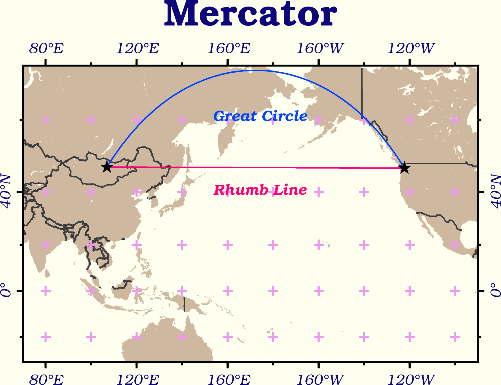

10. Design Map Layout¶
Attention
This instruction is for the Modern Mode in GMT 6. For making the same map using the GMT 6 Classic Mode or GMT 4-5, Please go to this page (only final script available).
Now let us see how GMT deals with the map layout. GMT uses many pre-defined option values so that uses don’t need to set a lot of things up for making a map. However, if we want to have a more complex design such as multiple panels, different frame types, and tweaking font style, we have to adjust GMT’s “user configuration.” Also, in this chapter we will introduce the two major projection types used for geospatial data: cylindrical (Mercator) and planar (Lambert) and the associated settings in GMT.
10.1. Goal¶
Draw the Great Circle Route and the Rhumb Line between Ulaanbaatar, Mongolia, and Seattle, USA. A great circle route is the path along the great circle (the circle whose radius equals the radius of Earth), and a rhumb line is a path whose incident angle to any meridian is the same. The map of this chapter uses two different projections. The upper panel uses the Lambert azimuthal equal-area projection, and the lower panel uses the Mercator Projection. The map shows some interesting points:
A rhumb line is a straight line when the map is drawing using the Mercator projection, while the great circle route is a curved line on the same map. However, the great circle route is actually the shortest path between any two locations.
The great circle route connecting any point to the center of the Lambert map (Ulaanbaatar in this example) is a straight line. On the other hand, the thumb line becomes a curved line in this case. You can see that a Lambert map does a better job of keeping the relative length of different paths, as well as their actual direction (which is why this projection is referred to as an azimuthal projection).
We will also change the GMT default settings including fonts, colors, and layout for this map. You will find more details in this chapter.

Go to the final Script
10.2. Commands and Techniques¶
defaults- check GMT’s default map parametersset- change GMT’s default map parametersplot- plot points and lines using under a geographical coordinate systemtext- set text in detail on a mapbasemap- set up mapping area, axes, and map framecoast- plot shorelines and bordersExternal command
rm- delete a file (delfor Windows)External command
echo- pass input data through a pipeGMT shared options:
-X-Y-:GMT default settings and the
gmt.conffileMore ways to specify geographical coordinates
How to set up a map layout
How to change font style
How GMT makes a map using a different projection system
10.3. Tasks before plotting¶
First, we have to get the coordinates for Ulaanbaatar and Seattle. On their Wikipedia page we can find the latitude and longitude of both cities, which is a link to more information about coordinates under different projection systems. Here we have an example of Ulaanbaatar.

Note that there are two formats of coordinates in the WGS84 field. Either of them works in this example as GMT supports both formats. The other thing worth paying attention to is the coordinates are represented by “latitude-longitude”. We have collected the coordinates of both places in the following table (rounded to the second decimal place):
City |
Ulaanbaatar |
Seattle |
|---|---|---|
Latitude/Longitude (Deg, Min, Sec) |
47° 55′ 0″ N, 106° 55′ 0″ E |
47° 36′ 35″ N, 122° 19′ 59″ W |
Latitude/Longitude (Decimal) |
47.92, 106.92 |
47.61, -122.33 |
We can create a text file coord.txt and save the coordinate information to the file to easily access them later with GMT. Here’s the content of coord.txt with the decimal formatted coordinates:
47.92, 106.92
47.61, -122.33
Let me emphasize that the first column is latitude (y) and the second column is longitude (x). This is opposite to the x-y order we used in the chapter Scatter Plot. However, you’ll see there is a way to specify the meaning of each column so that GMT can still recognize them correctly. In addition, we use commas to separate the columns here, which is acceptable for GMT too.
Here’s the content of coord.txt with the d/m/s coordinates:
47:55:0N, 106:55:0E
47:36:35N, 122:19:59W
Note that I have changed all the degree, minute, and second symbols to colons and removed the space between the numbers. This is one of the standard longitude and latitude formats for GMT. If your geographical coordinates adopt this format, remember to check whether all the special symbols have been converted into colons before feeding it to GMT, as this example shows.
You can also download the data from here: coord.txt. This file uses degrees, minutes, and seconds coordinates.
Tip
To summarize the requirements of data files and longitude and latitude format for GMT:
The acceptable delimiters for separating columns include space, comma (as in
.csvfiles), and Tab (as in.tsvfiles). However, you cannot use more than one kind of delimiter in a single file. By default, the first column is set to be the x value, and the second column is set to be the y value. You can override this setting when reading them using a GMT command.The acceptable formats for geographical coordinates are decimal and degrees, minutes, and seconds:
For the decimal system, a negative latitude represents the southern hemisphere, and a negative longitude or a longitude over 180 degrees represents the western hemisphere. For example, both 243 and -63 are 63 degrees W.
For the degrees, minutes, and seconds system, the format is
ddd:mm:ssFwheredddare degrees,mmare minutes,ssare seconds, andFis a letter noting N, E, W, or S.
10.4. Procedure¶
Let’s start from the lower part of the target map (the one using the Mercator projection). First of all, we draw the coastlines and country borders:
land_color="#CEB9A0" # Color for land area
gmt begin ulaanbaatar_seattle png
gmt basemap -R70/270/30S/70N -JM13c -B+tMercator
gmt coast -Dl -A1000 -G$land_color -N1/thick,60 -Ba40f20g20
# -D: Adjust the coastline resolution. We set it to l (low) because we are drawing the global coastlines and do not need high-resolution data.
gmt end

For detailed settings of the map such as font size and gridline width, we use the default GMT parameters. You can use defaults to take a look at these values on the terminal:
$ gmt defaults -D
And this is what you would see on the screen:
#
# GMT 6.0.0 Defaults file
#
# COLOR Parameters
#
COLOR_BACKGROUND = black
COLOR_FOREGROUND = white
COLOR_NAN = 127.5
COLOR_MODEL = none
... #(skipped)
A line that does not start with the # symbol represents a GMT parameter. The name of the parameter is that capitalized string. The meaning of each parameter can be found at the official GMT manual. We have two ways to modify the default parameter settings:
When entering a GMT command, you can use
--parameter=value(long option syntax). In Visualize Raster Data Using a Colormap, we used this method to adjust theCOLOR_NANsettings and make the no-data area rendered grey on the map. The change by this way only applies to this GMT command For the other commands, the default parameter values are still used.Use the
setcommand to change the parameter value. it has the following syntax:$ gmt set name1 value1 [name2 value2 name3 value3...] # ---- or ---- $ gmt set name1=value1 [name2=value2 name3=value3...]
In this tutorial, I will use the first syntax for a better alignment of parameter values. The main difference between this method and the previous method is that GMT records the change. As long as the record is not overwritten or deleted, the modified parameter setting is valid for all subsequent commands. When the
setcommand is issued for the first time, GMT will create agmt.conffile in the current directory and store all changes in it. All subsequent GMT commands will read this file, which is why usingsethas a permanent effect.
Tip
It is possible to have the gmt.conf file in your folder that comes from your previous mapping session. If you don’t want the previous parameter settings to “interfere” with the map you are drawing this time, you can simply delete gmt.conf, so that GMT will reuse the system default values, and then you can use set from the beginning to modify mapping parameters.
Now we know how set works, and let’s take a test right away. Add this command to the script we use to plot the lower half of the target map:
land_color="#CEB9A0"
gmt set MAP_FRAME_TYPE plain
# MAP_FRAME_TYPE: border style of the map. The default is fancy, which is the black-and-white border as shown above. We change it to plain for rendering the most basic border style.
gmt begin ulaanbaatar_seattle png
gmt basemap -R70/270/30S/70N -JM13c -B+tMercator
gmt coast -Dl -A1000 -G$land_color -N1/thick,60 -Ba40f20g20
gmt end

You can see that the map frame has turned from a zebra pattern into a simple line. Now we’ll modify the following default parameters one by one using the same way:
FONT_TITLE: Title font. In GMT, the font string is similar to a pen string, which consists of three parts:size, style, color. “Size” can be any value with a default unit of points. “Style” refers to the PostScript font table, which can be assigned by the font name or the font number. “Color” is a generic color format for GMT. The setting we want is30,Bookman-Demi,#0D057A(30-pt Bookman-Demi with the color of #0D057A).FONT_ANNOT_PRIMARY: The font for the primary grid tick labels. We use12p,20,#0D057A(12-pt Bookman-LightItalic; the color is the same as the title).FORMAT_GEO_MAP: format of (geographical) coordinates on the map. We use a combination code names here:dstands for degree,mstands for minutes,sstands for seconds, andFrepresents the “NEWS” suffix that will be added after the value. The detailed documentation is available here. We usedddF, which means to only show degrees with up to three digits as well as the direction suffix.MAP_GRID_CROSS_SIZE_PRIMARY: The size of the grid cross on the map. We use8p.MAP_GRID_PEN_PRIMARY: the pen attribute of the map grid. We usethinner,#ED99F0.MAP_TICK_PEN_PRIMARY: The pen attribute of the map ticks. We usethicker, black.MAP_TITLE_OFFSET: The vertical distance between the map title and the frame. We use0.5c.MAP_ANNOT_OBLIQUE: the “placement mode” of the map tick labels. In the above figure, the labels for longitude and latitude are displayed horizontally. Here we want to use the code32, which means that “longitude remains the same format, and latitude is vertically displayed along with the map border”.PS_PAGE_COLOR: The background color of the paper. Weivory.
Therefore, the set command in the original script can be expanded to:
# ... (skipped)
gmt set FONT_ANNOT_PRIMARY 12p,20,#0D057A \
FONT_TITLE 30,Bookman-Demi,#0D057A \
FORMAT_GEO_MAP dddF \
MAP_ANNOT_OBLIQUE 32 \
MAP_FRAME_TYPE plain \
MAP_GRID_CROSS_SIZE_PRIMARY 8p \
MAP_GRID_PEN_PRIMARY thinner,#ED99F0 \
MAP_TICK_PEN_PRIMARY thicker,black \
MAP_TITLE_OFFSET 0.5c \
PS_PAGE_COLOR ivory
# Note that I used "\" at the end of each line, which continues the gmt set command to the next line.
# ... (skipped)
Note
Many parameters have PRIMARY in their names because some GMT map frames (especially the fancy type frames) use different settings to render primary gridlines (and ticks) and secondary gridlines (and ticks). In our case, we only set the primary main gridlines and omit the secondary gridlines. You can also change to a fancy type map frame and specify the style of secondary gridlines (by setting the parameters with SECONDARY in their name) to see what the figure looks like!
Tip
To use a PostScript font that is not predefined by GMT, see `this example < https://docs.generic-mapping-tools.org/6.0/gallery/ex31.html>`_.
Here’s the output figure:

Most of the changes are as we expected: all font styles have been changed, the map frame has been replaced, colors and gridlines now look much better. Next, let us complete the city locations and two different paths on this map. In coord.txt, the coordinate field order is “latitude, longitude”. Hence, to use plot you need to add the -: option “telling” GMT that the first column is Y and the second column is X. The default mode of plot for drawing a line on the map is to “draw the great circle route.” If you add the -A option, you can override the rule and “draw the straight path in the projected map system”. For Mercato projection, this straight path is exactly the rhumb line. Therefore, we use plot and text to plot these items and make the names of the two lines:
# ==== Set variables ====
input_xy="coord.txt"
land_color="#CEB9A0" # color for land area
rl_color="#FF0073" # color for rhumb line
gc_color="#0044FF" # color for great circle line
# ==== Set map parameters ====
gmt set FONT_ANNOT_PRIMARY 12p,20,#0D057A \
FONT_TITLE 30,Bookman-Demi,#0D057A \
FORMAT_GEO_MAP dddF \
MAP_ANNOT_OBLIQUE 32 \
MAP_FRAME_TYPE plain \
MAP_GRID_CROSS_SIZE_PRIMARY 8p \
MAP_GRID_PEN_PRIMARY thinner,#ED99F0 \
MAP_TICK_PEN_PRIMARY thicker,black \
MAP_TITLE_OFFSET 0.5c \
PS_PAGE_COLOR ivory
# ==== Begin to plot ====
gmt begin ulaanbaatar_seattle png
gmt basemap -R70/270/30S/70N -JM13c -B+tMercator
gmt coast -Dl -A1000 -G$land_color -N1/thick,60 -Ba40f20g20 --MAP_GRID_PEN_PRIMARY=thicker
# We adjust MAP_GRID_PEN_PRIMARY so the cross signs can be a bit thicker
gmt plot $input_xy -: -A -W1p,$rl_color # Rhumb line
gmt plot $input_xy -: -W1p,$gc_color # Great circle path
gmt plot $input_xy -: -Sa0.4c -Gblack # location of the cities. -Sa0.4c is a star symbol which can be circumscribed by a 0.4 cm diameter circle.
# The following are the labels for the two lines
echo "174 41 Rhumb Line" | gmt text -F+f,18,$rl_color
echo "174 61 Great Circle" | gmt text -F+f,18,$gc_color
gmt end
In this way, the lower half of the target map is complete!
{kind=link}
Next, let us switch to the upper panel with a Lambert projection map. In order to prevent the panels from overlapping each other, we must place this second map at a different position on the figure; in this case, it’s moving up. The GMT general options -X and -Y are used to set the relative position of the map panels. Its syntax is
-Xhorizontal_offset (positive to the right)
-Yvertical_offset (positive to the north)
Here we only need the vertical offset and thus use -Y. For example, -Y12c is an offset of 12 cm upward. You can also use h and w to represent the height and width of the previous map. For example, -Yh+3c means to offset the height of the previous map plus 3 cm. -X and -Y permanently change the drawing position on the figure, so you only need to use these options once at the first plotting command for the next map.
Now let’s take a look at the -R and -J options for the Lambert azimuthal equal-area projection. This projection needs to have a global mapping extent, which is -R-180/180/-90/90. You can also use the shorter code -Rg for the same setting. The -J syntax is:
-JAcenter_longitude/center_latitude/mapsize
Specify the coordinates of Ulaanbaatar as the center of the projection, and you can draw the map, coastline, great circle route, and city locations:
# ... (Skipped)
# ==== Begin to plot ====
gmt begin ulaanbaatar_seattle png
# ... (Here's the code for the Mercator map panel)
# ==== Plot (Lambert) ====
gmt basemap -Rg -JA106:55/47:55/13c -Yh+3c -B+tLambert --MAP_TITLE_OFFSET=0c # We put the map title a bit closer to the map frame
gmt coast -Dl -A1000 -G$land_color -N1/thick,60 -Bxg60 -Byg30 --MAP_GRID_CROSS_SIZE_PRIMARY=0p
# We don't want crosshair marks on the map so MAP_GRID_CROSS_SIZE_PRIMARY is set to 0
gmt plot $input_xy -: -W1p,$gc_color # Great circle path
gmt plot $input_xy -: -Sa0.4c -Gblack # City locations
gmt end
{kind=link}
Note that GMT cannot use the -B option to plot tick labels for a Lambert map. We will have to use text to add them later. Now Ulaanbaatar has been placed in the center of the map, and in this case, the great circle path is already a straight line to Seattle. If we turn on the -A option, we will just get the same path. How do you plot the rhumb line on this map? Since Seattle and Ulaanbaatar have very similar latitudes, the rhumb line is essentially a segment that goes along the latitude line. To tackle this situation, we can use the -Ap option to force connecting two points along the latitude and longitude lines:
gmt plot $input_xy -: -Ap -W1p,$rl_color # Rhumb line (for the second map)
Tip
The above technique of drawing rhumb lines cannot apply to two places with different latitudes. A more general approach is to call a multifunctional command in GMT: project. This command can perform the coordinate transformation or generate a path connecting two points in a specific coordinate system. So we use project to generate a straight path in the Cartesian system, and then we plot this path for the rhumb line:
gmt project -C106.92/47.92 -E237.67/47.61 -G10 -N | gmt plot -W1p,$rl_color # Rhumb line (for the second map)
# -C: Starting point coordinates (Ulaanbaatar)
# -E: Ending point coordinates (Seattle. We add 360 to its longitude to force this line to go east from Ulaanbaatar)
# -G: Distance of each sampling point along the line (the unit is the same as the coordinates)
# -N: Set the coordinate system to Cartesian
You are welcome to replace the code for the rhumb line in the original script with this line. For more information about the project command, please go to Contours and Profiles.
The last step for this map is to add text labels to the two lines and the latitude and longitude gridlines. It’s showtime for text! In this case, the text to be labeled is more complicated because each of them needs to have a different tilting angle. It would be a pain in the neck to specify this one at a time using echo. Fortunately, we can use the redirection operator << for text and enter different information at once, which is similar to what we do with plot. Specifically, its syntax is:
gmt text -F+field_a+field_b+.... [other options] << EOF
field_1(X) field_2(Y) field_3(field_a) field_4(field_b) ... last_field (label text)
... ... ... ... ... ...
... ... ... ... ... ...
EOF
In other words, text requires that the input has at least 3 fields (X, Y, label text). If there are more fields, you can use the -F option to specify what the extra fields mean. For the text labels of the latitudes and longitudes, we use -F+a so that the third column becomes the tilting angle of each text (0 is horizontal, rotating counterclockwise), and the label text is read from column 4, as shown below:
gmt text -F+a << ANNOTEND
106.92 -30 0 30@.S
106.92 30 0 30@.N
60 15 70 60@.E
180 15 305 180@.
ANNOTEND
# lon lat angle text
# "@." would be rendered as a degree sign
To add labels for the great circle path and the rhumb line, we want to specify a different font in addition to the tilting angle. For the previous Mercator map, we specify a font by -F+fstyle. If style is omitted in the string, text will find a certain field from the input for the font style. Therefore, we can use -F+a+f to specify that the third column is tilting angle, the fourth column is the font style, and the label text is the fifth column this time:
gmt text -F+a+f << LABELEND
180 40 58 ,Bookman-DemiItalic,$rl_color Rhumb Line
180 80 58 ,Bookman-DemiItalic,$gc_color Great Circle
LABELEND
# lon lat angle font text
Add the above two code snippets to the # ==== Plot (Lambert) ==== section in the script, and you can create the labels we want.
Congratulations! The map we want for this chapter is finally done. Lastly, let me bring this up again: the map parameters modified using set will be stored in gmt.conf. If you want to make some maps in the same folder next time but do not want to use the same settings from this time, you can manually delete gmt.conf after you are done with this map or put the delete command in the last line of the script:
# ... (Skipped)
gmt end
rm -rf gmt.conf # <---- remove old map configuration file
10.5. Script¶
The final script for our map is:
# ==== Set variables ====
input_xy="coord.txt"
land_color="#CEB9A0"
rl_color="#FF0073" # color for rhumb line
gc_color="#0044FF" # color for great circle line
# Write the xy coordinates of the two cities into the $input_xy file
# If you have downloaded coord.txt, then you can comment the following four lines.
xy_ulaanbaatar="47:55:0N, 106:55:0E" # Ulaanbaatar lat/lon
xy_seattle="47:36:35N, 122:19:59W" # Seattle lat/lon
echo $xy_ulaanbaatar > $input_xy
echo $xy_seattle >> $input_xy
# ==== Set map parameters ====
gmt set FONT_ANNOT_PRIMARY 12p,20,#0D057A \
FONT_TITLE 30,Bookman-Demi,#0D057A \
FORMAT_GEO_MAP dddF \
MAP_ANNOT_OBLIQUE 32 \
MAP_FRAME_TYPE plain \
MAP_GRID_CROSS_SIZE_PRIMARY 8p \
MAP_GRID_PEN_PRIMARY thinner,#ED99F0 \
MAP_TICK_PEN_PRIMARY thicker,black \
MAP_TITLE_OFFSET 0.5c \
PS_PAGE_COLOR ivory
# ==== Begin to plot ====
gmt begin ulaanbaatar_seattle_gmt6 png
# ==== Bottom panel (Mercator) ====
gmt basemap -R70/270/30S/70N -JM13c -B+tMercator
gmt coast -Dl -A1000 -G$land_color -N1/thick,60 -Ba40f20g20 --MAP_GRID_PEN_PRIMARY=thicker
gmt plot $input_xy -: -A -W1p,$rl_color # Rhumb line
gmt plot $input_xy -: -W1p,$gc_color # Great circle path
gmt plot $input_xy -: -Sa0.4c -Gblack
echo "174 41 Rhumb Line" | gmt text -F+f,18,$rl_color
echo "174 61 Great Circle" | gmt text -F+f,18,$gc_color
# ==== Top panel (Lambert) ====
gmt basemap -Rg -JA106:55/47:55/13c -Yh+3c -B+tLambert --MAP_TITLE_OFFSET=0c
gmt coast -Dl -A1000 -G$land_color -N1/thick,60 -Bxg60 -Byg30 --MAP_GRID_CROSS_SIZE_PRIMARY=0p
gmt plot $input_xy -: -Ap -W1p,$rl_color # Rhumb line
gmt plot $input_xy -: -W1p,$gc_color # Great circle path
gmt plot $input_xy -: -Sa0.4c -Gblack
gmt text -F+a << ANNOTEND
106.92 -30 0 30@.S
106.92 30 0 30@.N
60 15 70 60@.E
180 15 305 180@.
ANNOTEND
gmt text -F+a+f << LABELEND
180 40 58 ,Bookman-DemiItalic,$rl_color Rhumb Line
180 80 58 ,Bookman-DemiItalic,$gc_color Great Circle
LABELEND
gmt end
# rm -rf gmt.conf # Remove existing GMT parameter settings
Note
“Plot great circle routes and rhumb lines. The layout, map frame, mark type, and mark locations have been fine-tuned. Draw the bottom panel (Mercator projection) first and then draw the upper panel (Lambert projection). We also add several additional lines in the script to label the latitude and longitude lines in the upper panel.”
Check the final map
10.6. Exercise¶
Make a map of Equatorial Guinea as similar to the figure below 1 as possible. You do not need to place roads, cities, place names, and scales, but the red circles and the black dotted lines connecting them must be plotted. Country names (Cameroon, Gabon, and São Tomé e Príncipe) have to be placed on the map too. as well as the names of the five large islands. The map inset on the top left of the main map can be treated as the second map. Use -X and -Y to select the location and overlay it on the main map.